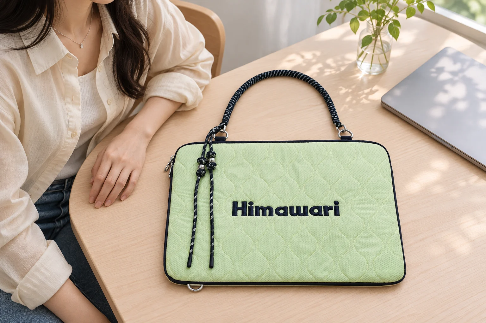
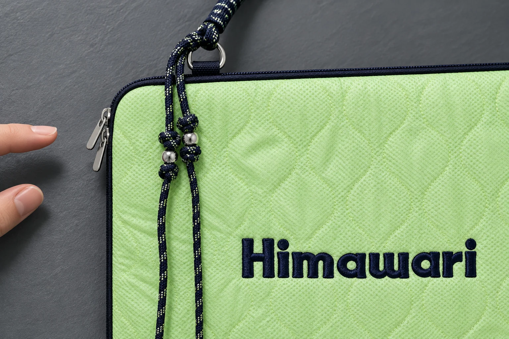
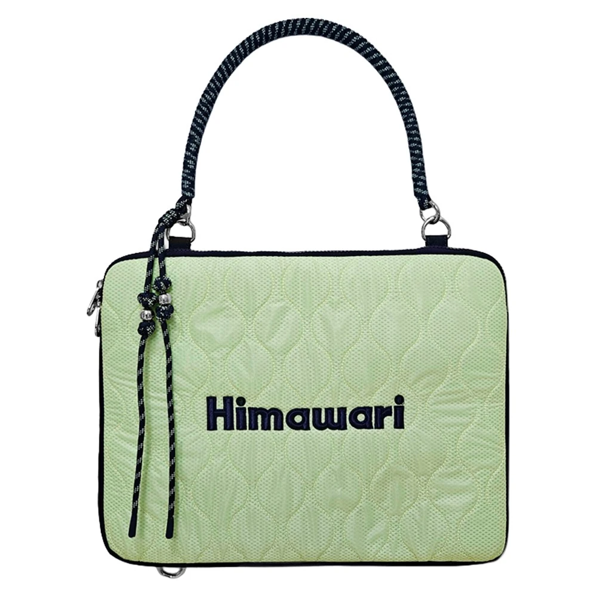

좁은 책상에서 노트북 파우치 지퍼를 어느 쪽으로 둘까

책상에 노트북 파우치가 놓일 만큼 자리가 있으면 그 자리에서 기기도 꺼낼 수 있을까요? 나란히 앉는 긴 책상에서는 옆 사람 쪽으로 손을 뻗기 어렵고, 벽을 마주 보는 책상에서는 뒤쪽에 모니터 받침이나 전원선이 있습니다. 파우치를 내려놓을 자리는 있어도 지퍼를 잡고 노트북을 받아 들 자리는 부족할 수 있습니다. 그때마다 파우치를 책상 모서리로 옮기기보다 처음부터 지퍼를 여는 쪽과 노트북을 내려놓을 쪽을 구분해 보세요.
히마와리 No.2513 민트의 공개 제품 정보에 적힌 외부 크기는 가로 36.5 × 세로 28 × 폭 2cm입니다. 이 수치로는 파우치가 차지하는 바깥 면적을 가늠할 수 있습니다. 책상에 놓인 충전기나 머그잔 사이로 손이 들어갈지는 내 자리에서 봐야 합니다. 이 글에서는 책상 모양에 따라 파우치를 두는 방향을 비교합니다. 노트북이 파우치 안에 들어가는지는 기기 크기와 내부 공간을 별도로 확인해야 합니다.
옆자리가 가까운 긴 책상이라면
칸막이 없이 나란히 앉는 자리에서는 파우치를 앉은 자리 앞에 놓고 내 쪽에서 지퍼를 잡기 편한 방향을 고릅니다. No.2513 민트의 공개 사진에서는 글씨가 똑바로 보이는 방향을 기준으로 왼쪽 가장자리에 은색 지퍼 손잡이가 있습니다. 같은 쪽에 장식끈도 내려와 있습니다. 책상 왼편을 옆 사람과 공유한다면 그쪽으로 팔꿈치를 내기 전에 파우치를 조금 돌려 지퍼 손잡이를 내 앞쪽에 가깝게 둘 수 있습니다. 책상에 올렸을 때 로고가 정면을 향해야 할 이유는 없습니다.
지퍼를 잡는 손뿐 아니라 파우치를 받치는 손이 어디에 놓일지도 살핍니다. 한 손으로 지퍼를 당길 때 가방이 함께 밀리면 지퍼를 잡을 자리만으로는 부족합니다. 반대쪽 가장자리를 가볍게 받칠 자리가 있어야 합니다. 옆에 컵이 있다면 그 자리에서 지퍼를 여는 동안 손이 컵을 스치지 않는지 봅니다. 손이 한 번 스칠 듯한 정도라면 처음부터 컵을 멀리 옮기는 편이 파우치를 다시 놓는 것보다 간단합니다.
사진처럼 지퍼 손잡이와 장식끈이 가까우면 처음에는 손가락이 끈 쪽으로 갈 수 있습니다. 끈을 본체 면 쪽에 잠시 놓아 지퍼 손잡이를 드러내고 나서 천천히 움직여 보세요. 끈을 연결 고리에서 풀거나 세게 잡아당길 필요는 없습니다. 어디에서 걸리는 느낌이 나면 잠시 멈추고 손잡이와 끈이 겹쳤는지부터 확인합니다. 이때 한 번 열어 본 방향을 기억해 두면 같은 책상에서 닫을 때에도 손을 넣을 쪽을 다시 찾지 않아도 됩니다.

뒤쪽이 막힌 책상이라면
모니터 받침이나 벽이 뒤에 가까우면 손이 닿는 책상 앞쪽을 먼저 살핍니다. 책상 깊이가 짧아 파우치를 두고 노트북을 앞에 내려놓기 어렵다면 빈 공간을 옆으로 확보해 보세요. 닫힌 파우치를 평평한 곳에 둡니다. 노트북을 꺼내 옆에 내려놓는 동안 부딪칠 만한 물건이 있다면 치워 두세요. 여유가 없다면 파우치를 책상 끝에 걸치지 말고 넓은 곳에서 꺼낸 다음 기기만 옮기는 편이 수월합니다.
기기를 뺄 때에는 노트북 모서리가 파우치 입구에 닿는지도 봐야 합니다. 지퍼를 충분히 열지 않은 채 기기 한쪽만 위로 잡아당기면 다른 쪽 모서리가 가장자리에 남을 수 있습니다. 기기를 꺼낼 쪽에 아래에서 손바닥으로 받칠 공간을 남깁니다. 노트북 모서리가 걸리면 힘을 더 주기 전에 입구가 얼마나 열렸는지와 기기가 비스듬히 들어 있는지를 봅니다. 지금 책상에서 파우치를 돌리기 쉬운지, 노트북 각도를 조금 바꾸기 쉬운지 비교해 보세요.
가방을 구입하기 전에 책상에서 이 순서를 가늠하고 싶다면 종이 한 장에 외부 치수만큼 표시해 보세요. 직사각형을 그리고 지퍼 손잡이가 놓인 모서리를 표시합니다. 그쪽에 손을 올려 보거나 사용할 기기를 종이 옆에 따로 내려놓습니다. 이렇게 해 보면 책상 위 자리를 가늠할 수 있습니다. 파우치에 내 기기가 들어갈지는 내부 크기로 따로 봅니다. 다만 매일 쓸 책상이 이미 좁다면 제품을 놓고도 양손을 쓸 자리가 있을지 미리 볼 수 있습니다. 손잡이 끈이 몸체 밖으로 놓일 자리도 따로 남겨야 합니다.

다시 넣는 방향까지 한 번 봅니다
일을 마치고 나면 책상에 충전선이나 메모지가 늘어나 있기 쉽습니다. 꺼냈을 때에는 빈자리였던 곳에 선이 누워 있을 수도 있습니다. 노트북을 다시 넣기 전에 파우치를 열 자리와 선을 내려놓을 자리를 먼저 나눕니다. 지퍼를 닫기 전에는 끈이나 종이 모서리가 입구에 걸치지 않았는지 봅니다. 출근할 때와 퇴근할 때의 배치가 꼭 같을 필요는 없습니다. 두 번 모두 기기를 한 손으로 공중에 든 채 파우치를 밀어야 한다면 파우치를 펼 곳을 더 넓게 잡으세요.
평소 가장 자주 앉는 자리에서 두 동작을 이어 보세요. 지퍼 손잡이를 잡을 때 팔이 닿는 곳과 노트북을 받아 내려놓는 곳입니다. 옆자리가 가까우면 지퍼를 내 쪽으로 돌려 손이 닿는 자리를 바꿉니다. 책상 뒤가 막혀 있다면 꺼낸 노트북을 둘 자리를 먼저 정합니다. 파우치를 어느 방향으로 돌려도 두 손이 들어갈 틈이 없다면, 책상에 올려둔 다른 물건부터 조금 옮겨 봅니다.